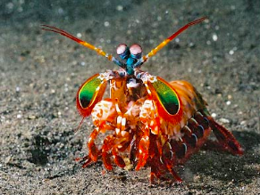
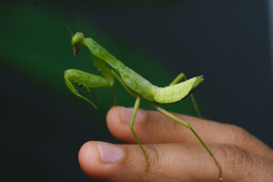
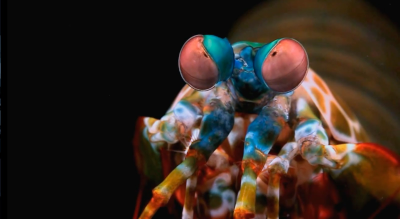
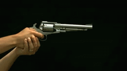
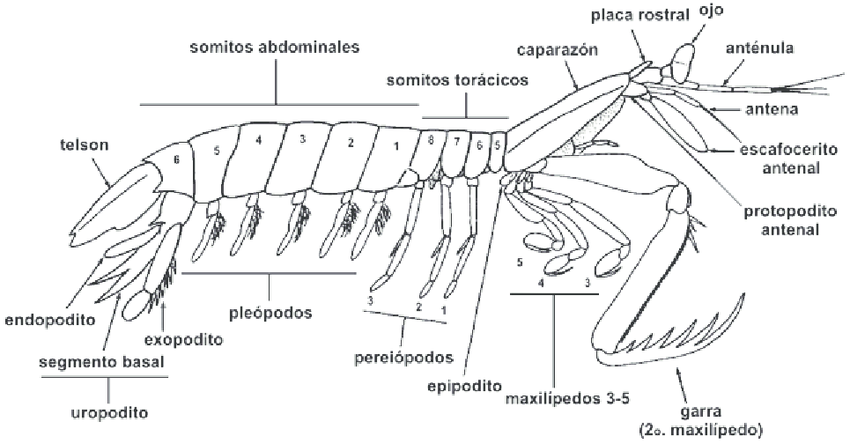
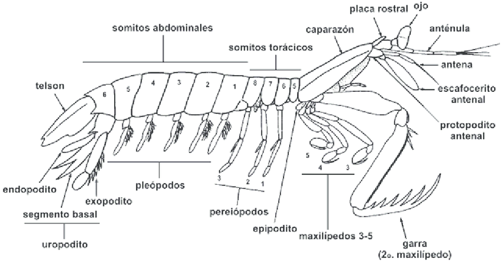

Fatos sobre o Stomatopoda
Mas afinal, o que é um Stomatopoda?
Stomatopoda, nome cietifico 'Odontodactylus scyllarus', chamados popularmente de tamarutacas ou de lacraias-do-mar no Brasil, é uma ordem de crustáceos marinhos da subclasse Hoplocarida, que agrupa cerca de 400 espécies, caracterizadas principalmente pela morfologia da segun da pata torácica, que é modificada em apêndice subquelado, lembrando uma pata de louva-a-deus. 'Odontodactylus scyllarus' habita a região do Indo-Pacífico, de Guam até a África Oriental.
 Fatos curiosos:
Olhos incriveis!
A maioria das pessoas tem três tipos de células de detecção de luz, ou fotorreceptores, que são sensíveis à luz vermelha, verde e azul. Mas o Stomatopoda tem de 12 a 16 fotorreceptores diferentes em sua banda média. Mas em 2013, Hanna Thoen, da Universidade de Queensland, descobriu que eles são muito piores em discriminar cores, do que a maioria dos outros animais! Eles parecem usar mais de uma dúzia de receptores para reconhecer cores de uma maneira única, muito diferente de outros animais, mas estranhamente semelhante a alguns satélites.
O Camarão mais forte
Na verdade sim, isso é possivel! Trata-se, proporcionalmente, do golpe mais poderoso do reino animal.
Dentre 400 espécies, o 'Odontodactylus scyllarus' é o que desfere um golpe mais violento: seu soco chega a 80 quilômetros por hora, aceleração semelhante a uma arma calibre .22.
Com uma pressão resultante de 60 quilos por centímetro quadrado, o bicho consegue facilmente quebrar a carapaça de um caranguejo – ou até mesmo o vidro de um aquário, em alguns casos.
Em artigo publicado na última semana no jornal iScience, pesquisadores explicam o que acontece no organismo desse crustáceo e como funciona seus apêndices que, tais e quais porretes, são capazes do mais poderoso golpe do reino animal.
Em linhas gerais, a pesquisa demonstrou que o golpe do camarão funciona graças a uma estrutura que armazena e libera energia. “Trata-se essencialmente de uma estrutura de duas camadas: uma superior, feita de biocerâmica (carbonato de cálcio amorfo), e uma inferior, de biopolímero (quitina e proteínas),a estrutura orgânica é carregada elasticamente pela flexão, de tal forma que a camada superior é comprimida enquanto a camada inferior é esticada.”, explicou o pesquisador Ali Miserez, professor da Universidade de Tecnologia de Nanyang, em Singapura, principal autor do estudo
 

Veja neste video esse poderoso soco: Clique aqui
Referencias:
National Geographic: Clique aqui
Wikipédia: Clique aqui
The Oatmeal: Clique aqui
UOL Tilt: Clique aqui